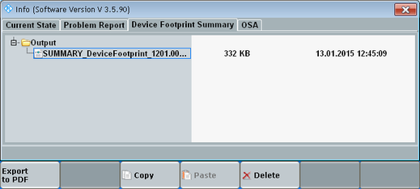

Device Footprint Summary Tab
The "Device Footprint Summary" tab allows you to export information about the instrument to a PDF file. The PDF file contains information about the hardware, software and licenses of the instrument.
The information is retrieved from the log files of the current session. The date and time in the file name refer to the start date and time of the session, not to the current date and time.

Info – Device Footprint Summary tab
To create a footprint PDF file, proceed as follows:
Press the INFO key on the (soft-) front panel to open the "Info" dialog box.
Select the "Device Footprint Summary" tab.
Press the hotkey "Export to PDF".
The PDF file is created and stored in folder Output.
Copy the file from folder Output to a USB memory stick, using the hotkeys "Copy" and "Paste".